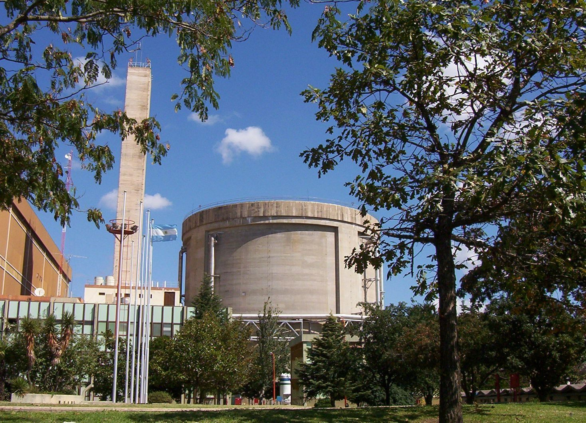

¿Cómo funciona la energía nuclear?
La nuclear aprovecha la energía que mantiene unidos los núcleos atómicos. Dentro del reactor, los núcleos de uranio-235 se parten (fisión) al ser golpeados por neutrones, liberando calor y más neutrones que parten otros núcleos: la reacción en cadena. Ese calor es lo que finalmente genera electricidad. Paso a paso:
Un neutrón golpea el núcleo de uranio-235, que se parte en dos fragmentos más livianos. La masa que "desaparece" se convierte en energía: \(E = mc^2\).
Cada fisión libera 2 o 3 neutrones que parten otros núcleos. Con barras de control se absorben neutrones para mantener la reacción estable y constante.
El calor de la fisión calienta el agua del circuito primario. Un intercambiador lo transfiere al circuito secundario, donde el agua se convierte en vapor.
El vapor a alta presión gira la turbina conectada al generador: el mismo ciclo de vapor de todas las centrales térmicas, pero sin quemar nada.
El generador produce electricidad que viaja por las líneas de alta tensión. El vapor se enfría en la torre de refrigeración y vuelve al ciclo.
Ubicación en Argentina
Argentina tiene tres centrales nucleares en operación, en dos provincias: dos en la costa del río Paraná (Atucha I y Atucha II, en Lima, provincia de Buenos Aires) y una en Córdoba (Embalse). La cuarta, el CAREM, es un reactor argentino de diseño propio que se construye también en Lima.

En Lima, partido de Zárate. Atucha I opera desde 1974; Atucha II, la mayor del país, desde 2014. Usan uranio natural con agua pesada.
En el lago de Embalse (Calamuchita). CANDU canadiense, reacondicionada en 2019, con 683 MW.
El primer reactor de potencia íntegramente diseñado en Argentina, de pequeña escala (potencia modular).
CNEA, NASA (operadora), INVAP (tecnología) y el enriquecimiento de uranio en Pilcaniyeu completan el ciclo argentino.
Potencia generada y rol en la matriz
Las tres centrales suman unos 1.763 MW de potencia instalada y generan alrededor del 7-9% de la electricidad argentina, con récords históricos de producción en los últimos años.
362 MW, en operación desde 1974: la primera central nuclear de América Latina.
745 MW, la mayor del país. Con Atucha I forma el complejo nuclear de Lima.
683 MW tras su reacondicionamiento (2019): unos 20 años más de vida útil.
Superior al 90%: la nuclear es la fuente que más tiempo opera a plena potencia de toda la matriz.
Su rol es el de energía de base: funciona de forma continua, sin depender del clima ni de la hora del día, complementando a las renovables intermitentes (eólica y solar) sin emitir gases de efecto invernadero.
Un solo gramo de uranio-235 produce tanta energía como casi 3.000 kg de carbón. Por eso con un volumen mínimo de combustible se mantiene encendida una central entera durante meses.
Ventajas y desventajas
- ✦ Sin emisiones de CO₂: 5–40 g CO₂/kWh en ciclo de vida, como eólica o hidro.
- ✦ Energía de base continua, con factor de carga superior al 90%.
- ✦ Densidad energética enorme: poca cantidad de combustible, mucho tiempo operando.
- ✦ Tecnología soberana en Argentina: CNEA, NASA, INVAP y uranio propio.
- ✦ Residuos radiactivos que deben gestionarse durante miles de años.
- ✦ Riesgo de accidentes: aunque raro, el impacto puede ser muy severo.
- ✦ Inversión inicial alta y obras de larga construcción.
- ✦ Uranio no renovable y preocupaciones de proliferación.
Para conocer la tecnología en profundidad —reactores, barras de control y la reacción en cadena— visitá Reactores Nucleares. Y para el recorrido completo de las fuentes, volvé al mapa de todas las fuentes.
Modelo 3D interactivo
Explorá una central nuclear completa en 3D: edificio del reactor, generador de vapor, sala de turbinas, torres de refrigeración y pileta de combustible usado. Rotá la escena con el mouse, hacé zoom y recorré cada sector.
La escena es representativa del funcionamiento general de una central nuclear y permite relacionar la fisión del uranio con la generación eléctrica.
Conceptos Clave
- ✦ La nuclear usa la fisión del uranio-235: \(E=mc^2\) convierte una mínima masa en una cantidad enorme de energía.
- ✦ Ubicación en Argentina: Atucha I y II (Lima, Buenos Aires) y Embalse (Córdoba), más el reactor CAREM en construcción.
- ✦ 1.763 MW instalados, ~7-9% de la matriz, con factor de carga superior al 90%: la energía de base sin emisiones.
- ✦ Gran ventaja: sin CO₂ y continua. Gran límite: residuos radiactivos y alto costo de construcción.